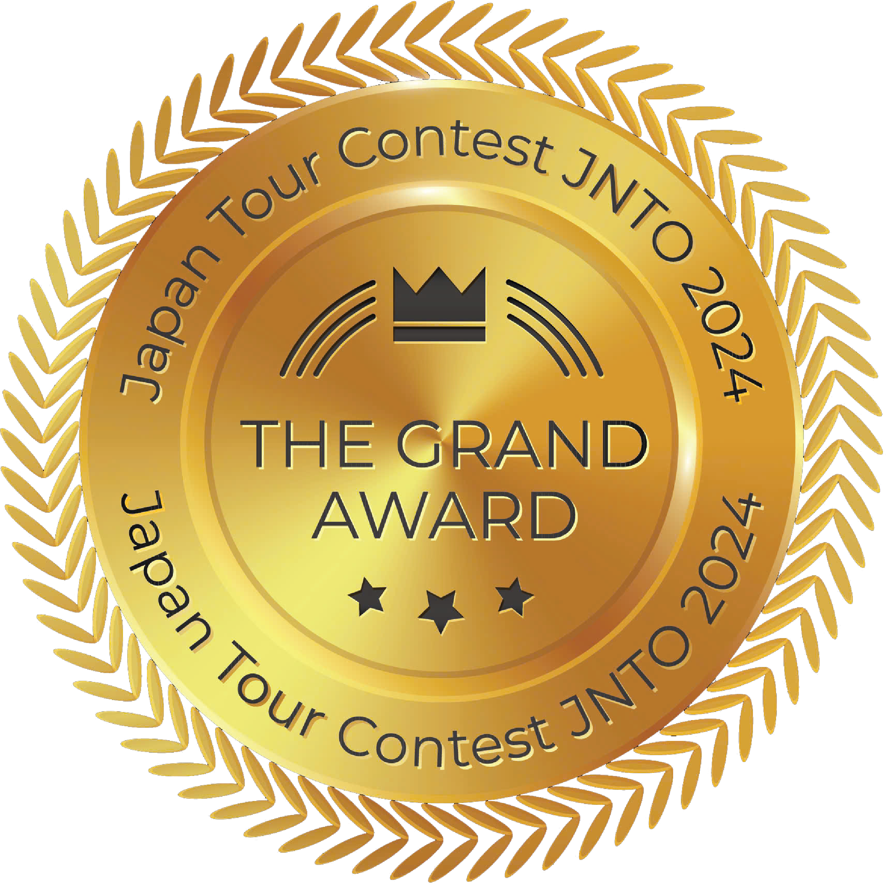

Tour Đông Xuân · 7 ngày 6 đêm
Từ Đông Rồi Sang Xuân Japan
Hành trình giao mùa từ tuyết trắng Nagano đến sắc xuân Kyoto, chạm vào nét văn hóa tinh tế và thiên nhiên kỳ vĩ của Nhật Bản.

Japan Tour Contest JNTO 2024
The Grand Award
Sản phẩm đạt giải Nhất cuộc thi thiết kế sản phẩm du lịch Nhật Bản JNTO 2024.